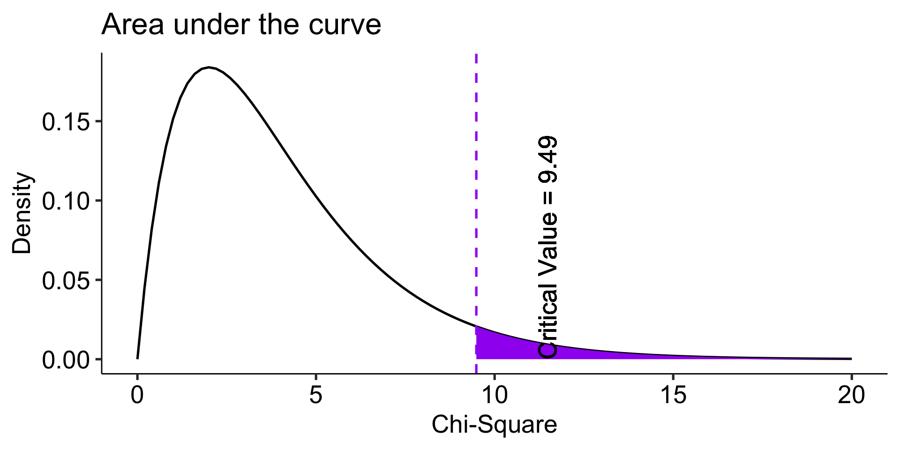

One-sample tests
Last week
Critiques of NHST
The focus on p-values leads to what kinds of problems in the scientific literature?
What evidence is there of these issues?
What can we do about it?
Today…
- The chi-square goodness-of-fit test
- One-sample t-tests
Key questions:
How do we know if category frequencies are consistent with null hypothesis expectations?
How do we handle categories with very low frequencies?
How do we compare one sample to a population mean?
What are the steps of NHST?
Define null and alternative hypothesis.
Set and justify alpha level.
Determine which sampling distribution ( \(z\), \(t\), or \(\chi^2\) for now)
Calculate parameters of your sampling distribution under the null.
- If \(z\), calculate \(\mu\) and \(\sigma_M\)
- Calculate test statistic under the null.
- If \(z\), \(\frac{\bar{X} - \mu}{\sigma_M}\)
- Calculate probability of that test statistic or more extreme under the null, and compare to alpha.
One-sample tests compare your given sample with a “known” population.
Research question: does this sample come from this population?
Hypotheses
\(H_0\): Yes, this sample comes from this population.
\(H_1\): No, this sample comes from a different population.
The sample data were obtained from Census at School, a website developed by the American Statistical Association to help students in the 4th through 12th grades understand statistical problem-solving.
The site sponsors a survey that students can complete and a database that students and instructors can use to illustrate principles in quantitative methods.
The database includes students from all 50 states, from grade levels 4 through 12, both boys and girls, who have completed the survey dating back to 2010.
We’ll focus on this one:
Which of the following superpowers would you most like to have? Select one.
- Invisibility
- Telepathy (read minds)
- Freeze time
- Super strength
- Fly
The responses from 200 randomly selected Oregon students were obtained from the Census at School database.
Code
| Superpower | Frequency | Proportion |
|---|---|---|
| Fly | 42 | 0.21 |
| Freeze time | 58 | 0.29 |
| Invisibility | 30 | 0.15 |
| Super strength | 13 | 0.06 |
| Telepathy | 57 | 0.28 |
Descriptively this is interesting. But, are the responses unusual or atypical in any way? To answer that question, we need some basis for comparison—a null hypothesis. One option would be to ask if the Oregon preferences are different compared to students from the general population.
Code
school_usa = read_csv("https://raw.githubusercontent.com/uopsych/psy611/master/data/census_at_school_usa.csv")
school_usa$Region = "USA"
school %>%
full_join(select(school_usa, Region, Superpower)) %>%
filter(!is.na(Superpower)) %>%
group_by(Region, Superpower) %>%
summarize(Frequency = n()) %>%
mutate(Proportion = Frequency/sum(Frequency)) %>%
ggplot(aes(x = Region, y = Proportion, fill = Region)) +
geom_bar(stat = "identity", position = "dodge") +
coord_flip() +
labs(
x = NULL,
title = "Category Proportion as a \nfunction of Source") +
guides(fill = "none") +
facet_wrap(~Superpower) +
theme_bw(base_size = 20) +
theme(plot.title.position = "plot")\(H_0\): Oregon student superpower preferences are similar to the preferences of typical students in the United States.
\(H_1\): Oregon student superpower preferences are different from the preferences of typical students in the United States.
Code
school %>%
full_join(select(school_usa, Region, Superpower)) %>%
mutate(Region = ifelse(Region == "OR", "OR", "USA")) %>%
filter(!is.na(Superpower)) %>%
group_by(Region, Superpower) %>%
summarize(Frequency = n()) %>%
mutate(Proportion = Frequency/sum(Frequency)) %>%
select(-Frequency) %>%
spread(Region, Proportion) %>%
kable(.,
col.names = c("Superpower", "OR Observed\nProportion",
"USA\nProportion"),
format = "html",
digits = 2)%>%
kable_classic(font_size = 25)| Superpower | OR Observed Proportion | USA Proportion |
|---|---|---|
| Fly | 0.21 | 0.23 |
| Freeze time | 0.29 | 0.25 |
| Invisibility | 0.15 | 0.20 |
| Super strength | 0.06 | 0.08 |
| Telepathy | 0.28 | 0.24 |
We can set our alpha ( \(\alpha\) ) level anywhere we like. Let’s stick with .05 for convention’s sake.
Now we identify our sampling distribution. We’ll use the chi-square ( \(\chi^2\) ) distribution because we’re dealing with
- one-sample, and
- a categorical outcome.
This can be a point of confusion: the way you measure the variable determines whether it is categorical or continuous. We can create summary statistics from categorical variables by counting or calculating proportions – but that makes the summary statistics continuous, not the outcome variable itself.
Degrees of freedom
The \(\chi^2\) distribution is a single-parameter distribution defined by it’s degrees of freedom.
In the case of a goodness-of-fit test (like this one), the degrees of freedom are \(\textbf{k-1}\), where k is the number of groups.
Degrees of freedom
The Degrees of freedom are the number of genuinely independent things in a calculation. It’s specifically calculated as the number of quantities in a calculation minus the number of constraints.
What it means in principle is that given a set number of categories (k) and a constraint (the proportions have to add up to 1), I can freely choose numbers for k-1 categories. But for the kth category, there’s only one number that will work.
The degrees of freedom are the number of categories (k) minus 1. Given that the category frequencies must sum to the total sample size, k-1 category frequencies are free to vary; the last is determined.
Code
data.frame(x = seq(0,20)) %>%
ggplot(aes(x = x)) +
stat_function(fun = function(x) dchisq(x, df = 5-1), geom = "line") +
stat_function(fun = function(x) dchisq(x, df = 5-1), geom = "area", fill = "purple",
xlim =c(critical_val, 20)) +
geom_vline(aes(xintercept = critical_val), linetype = 2, color = "purple")+
geom_text(aes(x = critical_val+2, y = dchisq(critical_val, 5-1) + .05,
label = paste("Critical Value =", round (critical_val,2))), angle = 90)+
labs(x = "Chi-Square", y = "Density", title = "Area under the curve") +
theme_pubr(base_size = 20)
Calculating the \(\chi^2\) test statistic
To compare the Oregon observed frequencies to the US data, we need to calculate the frequencies that would have been expected if Oregon was just like all of the other states.
The expected frequencies under this null model can be obtained by taking each preference category proportion from the US data (the null expectation) and multiplying it by the sample size for Oregon:
\[E_i = P_iN_{OR}\]
| Superpower | Observed Freq | Expected Freq |
|---|---|---|
| Fly | 42 | 46.91 |
| Freeze time | 58 | 50.37 |
| Invisibility | 30 | 39.51 |
| Super strength | 13 | 15.80 |
| Telepathy | 57 | 47.41 |
Now what? We need some way to index differences between these frequencies, preferably one that translates easily into a sampling distribution so that we can sensibly determine how rare or unusual the Oregon data are compared to the US (null) distribution.
\[\chi^2_{df = k-1} = \sum^k_{i=1}\frac{(O_i-E_i)^2}{E_i}\]
The chi-square goodness of fit (GOF) statistic compares observed and expected frequencies. It is small when the observed frequencies closely match the expected frequencies under the null hypothesis. The chi-square distribution can be used to determine the particular \(\chi^2\) value that corresponds to a rare or unusual profile of observed frequencies.
Fly Freeze time Invisibility Super strength Telepathy
42 58 30 13 57
Fly Freeze time Invisibility Super strength Telepathy
46.91358 50.37037 39.50617 15.80247 47.40741
Fly Freeze time Invisibility Super strength Telepathy
42 58 30 13 57
Fly Freeze time Invisibility Super strength Telepathy
46.91358 50.37037 39.50617 15.80247 47.40741
Fly Freeze time Invisibility Super strength Telepathy
42 58 30 13 57
Fly Freeze time Invisibility Super strength Telepathy
46.91358 50.37037 39.50617 15.80247 47.40741 Code
data.frame(x = seq(0,20)) %>%
ggplot(aes(x = x)) +
stat_function(fun = function(x) dchisq(x, df = length(or_expected)-1), geom = "line") +
stat_function(fun = function(x) dchisq(x, df = length(or_expected)-1), geom = "area", fill = "purple",
xlim =c(critical_val, 20)) +
geom_vline(aes(xintercept = critical_val), linetype = 2, color = "purple")+
geom_vline(aes(xintercept = chi_square), linetype = 2, color = "black")+
geom_text(aes(x = critical_val+2, y = dchisq(critical_val, length(or_expected)-1) + .05,
label = paste("Critical Value =", round (critical_val,2))), angle = 90)+
geom_text(aes(x = chi_square+2, y = dchisq(critical_val, length(or_expected)-1) + .05,
label = paste("Test statistic =", round (chi_square,2))), angle = 90)+
labs(x = "Chi-Square", y = "Density", title = "Area under the curve") +
theme_pubr(base_size = 20)Code
data.frame(x = seq(0,20)) %>%
ggplot(aes(x = x)) +
stat_function(fun = function(x) dchisq(x, df = length(or_expected)-1), geom = "line") +
stat_function(fun = function(x) dchisq(x, df = length(or_expected)-1), geom = "area", fill = "purple",
xlim =c(chi_square, 20)) +
geom_vline(aes(xintercept = critical_val), linetype = 2, color = "black")+
geom_vline(aes(xintercept = chi_square), linetype = 2, color = "purple")+
geom_text(aes(x = critical_val+2, y = dchisq(critical_val, length(or_expected)-1) + .05,
label = paste("Critical Value =", round (critical_val,2))), angle = 90)+
geom_text(aes(x = chi_square+2, y = dchisq(critical_val, length(or_expected)-1) + .05,
label = paste("Test statistic =", round (chi_square,2))), angle = 90)+
labs(x = "Chi-Square", y = "Density", title = "Area under the curve") +
theme_pubr(base_size = 20)
Fly Freeze time Invisibility Super strength Telepathy
0.23456790 0.25185185 0.19753086 0.07901235 0.23703704
Chi-squared test for given probabilities
data: or_observed
X-squared = 6.3957, df = 4, p-value = 0.1715The Oregon student preferences are not unusual under the null hypothesis (USA preferences).
Note that the chisq.test function takes for x a vector of the counts. In other words, to use this function, you need to calculate the summary statisttic of counts and feed that into the function.
List of 9
$ statistic: Named num 6.4
..- attr(*, "names")= chr "X-squared"
$ parameter: Named num 4
..- attr(*, "names")= chr "df"
$ p.value : num 0.171
$ method : chr "Chi-squared test for given probabilities"
$ data.name: chr "or_observed"
$ observed : 'table' int [1:5(1d)] 42 58 30 13 57
..- attr(*, "dimnames")=List of 1
.. ..$ : chr [1:5] "Fly" "Freeze time" "Invisibility" "Super strength" ...
$ expected : 'table' num [1:5(1d)] 46.9 50.4 39.5 15.8 47.4
..- attr(*, "dimnames")=List of 1
.. ..$ : chr [1:5] "Fly" "Freeze time" "Invisibility" "Super strength" ...
$ residuals: 'table' num [1:5(1d)] -0.717 1.075 -1.512 -0.705 1.393
..- attr(*, "dimnames")=List of 1
.. ..$ : chr [1:5] "Fly" "Freeze time" "Invisibility" "Super strength" ...
$ stdres : 'table' num [1:5(1d)] -0.82 1.243 -1.688 -0.735 1.595
..- attr(*, "dimnames")=List of 1
.. ..$ : chr [1:5] "Fly" "Freeze time" "Invisibility" "Super strength" ...
- attr(*, "class")= chr "htest"
Chi-square test against specified probabilities
Data variable: as.factor(school$Superpower)
Hypotheses:
null: true probabilities are as specified
alternative: true probabilities differ from those specified
Descriptives:
observed freq. expected freq. specified prob.
Fly 42 46.91358 0.23456790
Freeze time 58 50.37037 0.25185185
Invisibility 30 39.50617 0.19753086
Super strength 13 15.80247 0.07901235
Telepathy 57 47.40741 0.23703704
Test results:
X-squared statistic: 6.396
degrees of freedom: 4
p-value: 0.171 (Note that this function, goodnessOfFitTest, takes the raw data, not the vector of counts.)
What if we had used the equal proportions null hypothesis?
Chi-square test against specified probabilities
Data variable: as.factor(school$Superpower)
Hypotheses:
null: true probabilities are as specified
alternative: true probabilities differ from those specified
Descriptives:
observed freq. expected freq. specified prob.
Fly 42 40 0.2
Freeze time 58 40 0.2
Invisibility 30 40 0.2
Super strength 13 40 0.2
Telepathy 57 40 0.2
Test results:
X-squared statistic: 36.15
degrees of freedom: 4
p-value: <.001 Why might this be a sensible or useful test?
The usefulness of \(\chi^2\)
How often will you conducted a \(chi^2\) goodness of fit test on raw data?
- (Probably) never
How often will you come across \(\chi^2\) tests?
- (Probably) a lot!
The goodness of fit test is used to statistically test the how well a model fits data.
To calculate Goodness of Fit of a model to data, you build a statistical model of the process as you believe it is in the world.
- example: literacy ~ age + parental involvement
Then you estimate each subject’s predicted value based on your model.
You compare each subject’s predicted value to their actual value – the difference is called the residual ( \(\varepsilon\) ).
If your model is a good fit, then
\[\Sigma_1^N\varepsilon^2 = \chi^2\] which we compare to the distribution of \(\chi^2_{N-p}\) .
Significant chi-square tests suggest the model does not fit – the data have values that are far away from “expected.”
When we move from categorical outcomes to variables measured on an interval or ratio scale, we become interested in means rather than frequencies. Comparing means is usually done with the t-test, of which there are several forms.
The one-sample t-test is appropriate when a single sample mean is compared to a population mean but the population standard deviation is unknown. A sample estimate of the population standard deviation is used instead. The appropriate sampling distribution is the t-distribution, with N-1 degrees of freedom.
\[t_{df=N-1} = \frac{\bar{X}-\mu}{\frac{\hat{\sigma}}{\sqrt{N}}}\]
The heavier tails of the t-distribution, especially for small N, are the penalty we pay for having to estimate the population standard deviation from the sample.
One-sample t-tests
t-tests were developed by William Sealy Gosset, who was a chemist studying the grains used in making beer. (He worked for Guinness.)
Specifically, he wanted to know whether particular strains of grain made better or worse beer than the standard.
He developed the t-test, to test small samples of beer against a population with an unknown standard deviation.
- Probably had input from Karl Pearson and Ronald Fisher
Published this as “Student” because Guinness didn’t want these tests tied to the production of beer.
One-sample t-tests vs Z-test
| Z-test | t-test | |
|---|---|---|
| \(\large{\mu}\) | known | known |
| \(\sigma\) | known | unknown |
| sem or \(\sigma_M\) | \(\frac{\sigma}{\sqrt{N}}\) | \(\frac{\hat{\sigma}}{\sqrt{N}}\) |
| Probability distribution | standard normal | \(t\) |
| DF | none | \(N-1\) |
| Tails | One or two | One or two |
| Critical value \((\alpha = .05, two-tailed)\) | 1.96 | Depends on DF |
When you assume…
…you can run a parametric statistical test!
Assumptions of the one-sample t-test
Normality. We assume the sampling distribution of the mean is normally distributed. Under what two conditions can we be assured that this is true?
Independence. Observations in the dataset are not associated with one another. Put another way, collecting a score from Participant A doesn’t tell me anything about what Participant B will say. How can we be safe in this assumption?
A brief example
Using the same Census at School data, we find that Oregon students who participated in a memory game ( \(N = 227\) ) completed the game in an average time of 49.1 seconds ( \(s = 13.4\) ). We know that the average US student completed the game in 45.04 seconds. How do our students compare?
Hypotheses
\(H_0: \mu = 45.05\)
\(H_1: \mu \neq 45.05\)
\[\mu = 45.05\]
\[N = 227\]
\[ \bar{X} = 49.1 \]
\[ s = 13.4 \]
One Sample t-test
data: school$Score_in_memory_game
t = 4.2652, df = 196, p-value = 3.104e-05
alternative hypothesis: true mean is not equal to 45.05
95 percent confidence interval:
47.24269 51.01427
sample estimates:
mean of x
49.12848
One sample t-test
Data variable: school$Score_in_memory_game
Descriptive statistics:
Score_in_memory_game
mean 49.128
std dev. 13.421
Hypotheses:
null: population mean equals 45.05
alternative: population mean not equal to 45.05
Test results:
t-statistic: 4.265
degrees of freedom: 196
p-value: <.001
Other information:
two-sided 95% confidence interval: [47.243, 51.014]
estimated effect size (Cohen's d): 0.304 Shifting confidence intervals
Code
mu = 45.05
xbar = 49.1
s = 13.4
N = 227
sem = s/sqrt(N)
moe = qt(.975, df = N-1)*sem
plotdata = expand.grid(mean = c(mu,xbar),
tscore = seq(-6, 6, by =.01)) %>%
mutate(density = map_dbl(tscore, ~dt(.x, df = N-1)),
X = map2_dbl(tscore, mean, ~(.x*sem)+.y)) %>%
mutate(ci_lower = map_dbl(mean, ~.x-moe),
ci_upper = map_dbl(mean, ~.x+moe))
anim = plotdata %>%
ggplot(aes(x = X, y = density)) +
geom_point(size = .5) +
geom_vline(aes(xintercept = mu, color = "H0 mean")) +
geom_vline(aes(xintercept = xbar, color = "Sample mean")) +
geom_vline(aes(xintercept = ci_lower), linetype = "dashed")+
geom_vline(aes(xintercept = ci_upper), linetype = "dashed")+
geom_text(aes(x = mu, y = .35,
label = "H0 mean", color = "H0 mean"),
hjust = 1) +
geom_text(aes(x = xbar, y = .35,
label = "Sample mean", color = "Sample mean"),
hjust = 1) +
guides(color = "none") +
scale_x_continuous(limits = c(42, 55)) +
transition_states(mean, transition_length = 2, state_length = 2) +
theme_pubr()
animCohen’s D
Cohen suggested one of the most common effect size estimates—the standardized mean difference—useful when comparing a group mean to a population mean or two group means to each other.
\[\delta = \frac{\mu_1 - \mu_0}{\sigma} \approx d = \frac{\bar{X}-\mu}{\hat{\sigma}}\]
Cohen’s d is in the standard deviation (Z) metric.
Cohens’s d for these data is .30. In other words, the sample mean differs from the population mean by .30 standard deviation units.
Cohen (1988) suggests the following guidelines for interpreting the size of d:
.2 = Small
.5 = Medium
.8 = Large
Cohen, J. (1988), Statistical power analysis for the behavioral sciences (2nd Ed.). Hillsdale: Lawrence Erlbaum.
Another useful metric is the overlap between the two distributions – the smaller the overlap, the farther apart the distributions
Code
alt = mean(school$Score_in_memory_game, na.rm=T)
null = 45.05
se = sd(school$Score_in_memory_game, na.rm=T)/sqrt(length(which(!is.na(school$Score_in_memory_game))))
x = seq(from = 40, to = 55, by = .01)
d.alt = dnorm(x, mean = alt, sd = se)
d.nul = dnorm(x, mean = null, sd = se)
loc = min(which(d.alt-d.nul > 0))
loc = (x[loc] + x[loc-1])/2
area = pnorm(loc, mean = null, sd = se, lower.tail = F) + pnorm(loc, mean = alt, sd = se, lower.tail = T)
ggplot(data.frame(x=x), aes(x)) +
stat_function(fun = function(x) dnorm(x, mean = null, sd = se),
geom = "area", xlim = c(loc,55), fill = "black") +
stat_function(fun = function(x) dnorm(x, mean = alt, sd = se),
geom = "area", xlim =c(45, loc), fill = "black") +
stat_function(fun = function(x) dnorm(x, mean = null, sd = se), geom = "line", aes(color = "null")) +
stat_function(fun = function(x) dnorm(x, mean = alt, sd = se), geom = "line", aes(color = "alternative")) +
scale_color_discrete("Model") +
ggtitle(paste0("Overlap = ", round(area,3))) +
theme_bw(base_size = 20)
The usefulness of the one-sample t-test
How often will you conducted a one-sample t-test on raw data?
- (Probably) never
How often will you come across one-sample t-tests?
- (Probably) a lot!
The one-sample t-test is used to test coefficients in a model.
Call:
lm(formula = health ~ education, data = spi)
Residuals:
Min 1Q Median 3Q Max
-2.6683 -0.5896 0.3317 0.5284 1.6071
Coefficients:
Estimate Std. Error t value Pr(>|t|)
(Intercept) 3.353512 0.036015 93.116 < 2e-16 ***
education 0.039348 0.007732 5.089 3.8e-07 ***
---
Signif. codes: 0 '***' 0.001 '**' 0.01 '*' 0.05 '.' 0.1 ' ' 1
Residual standard error: 0.9733 on 3251 degrees of freedom
(747 observations deleted due to missingness)
Multiple R-squared: 0.007903, Adjusted R-squared: 0.007598
F-statistic: 25.9 on 1 and 3251 DF, p-value: 3.803e-07Next time…
Comparing two means